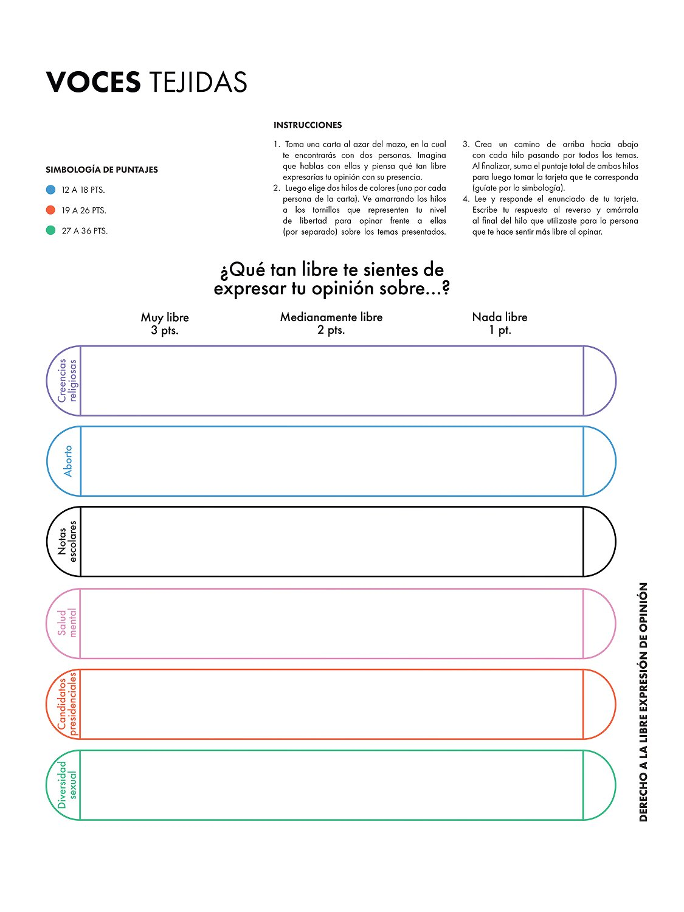
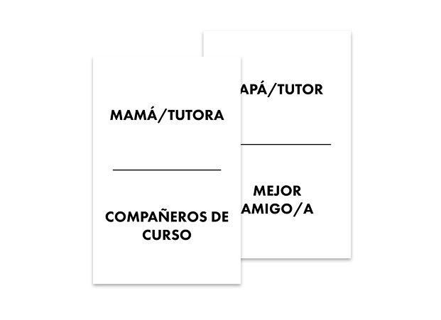
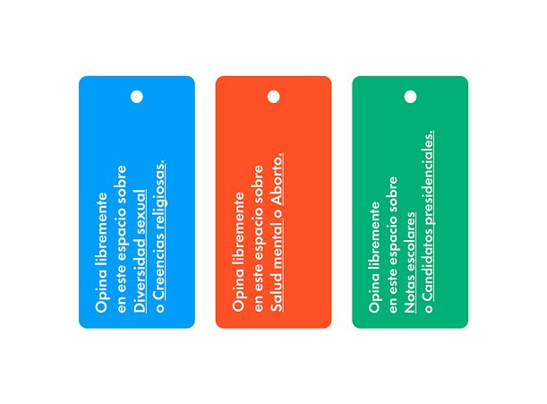
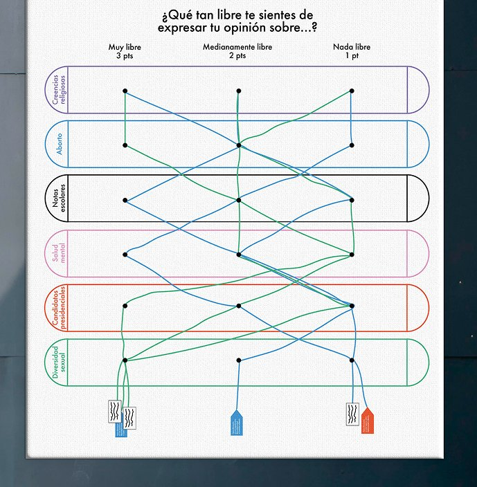

Voces tejidas
Instalación en Museo de la Memoria y los Derechos Humanos
Este proyecto fue desarrollado en el marco del Taller Explora, en colaboración con el Museo de la Memoria y los Derechos Humanos, como parte de la iniciativa «Memoria joven: Voces de niñez y adolescencia», que celebraba el Año de las Niñeces. La propuesta consistió en diseñar una serie de módulos interactivos que abordaban distintos derechos de niños, niñas y adolescentes, invitando a los visitantes a reflexionar sobre su importancia. Nuestro trabajo se centró en el derecho a la libertad de expresión y opinión, buscando representarlo visualmente de una manera cercana y comprensible, destacando la importancia de escuchar, respetar y dar espacio a las voces de las niñeces.
ConceptoExpresar es compartir lo que sentimos. No se trata solo de escuchar y ser escuchados, reconociendo al otro y su contexto. Así como hay diversidad de personas, hay diversidad de formas de expresarse.
Respeto • Manifiesto • Pensar/Sentir
ObjetivoVoces Tejidas busca representar cada opinión y experiencia compartida como un recorrido que convive en un tejido colectivo. Nuestro objetivo es entregar un espacio de reflexión en torno a cuánto se ejerce el derecho en diferentes contextos para luego invitar al usuario a dar una opinión más profunda.
Vínculo conceptualEl juego invita a reflexionar sobre lo que sentimos y pensamos, permitiendo manifestar nuestras opiniones de forma visual y simbólica. Al recorrer el espacio y expresar nuestras respuestas, ejercemos el derecho a la libre expresión, en un entorno que promueve el respeto por las ideas propias y ajenas.
ProblematizaciónEl derecho se problematiza a medida que el usuario se enfrenta a diferentes contextos, en los cuales deberá demostrar cuánta libertad siente al expresar su opinión frente a ellos. Si se obtiene un puntaje bajo, se evidencia la vulneración del derecho, ya que el usuario no se siente libre ni cómodo al expresar su opinión. Por otro lado, si el usuario obtiene un puntaje alto, el derecho se activa, ya que se manifiesta una sensación de libertad y comodidad al opinar.
FuncionamientoSe deberá sacar una carta al azar del mazo, en la cual se encontrarán dos personas, y se deberá pensar qué tan libre se expresaría la propia opinión en presencia de ellas. Luego, se deben amarrar dos cintas (una por cada persona de la carta) en los tornillos que representen el nivel de libertad al opinar sobre los temas presentados, creando así un recorrido de principio a fin. Para continuar, se suma el puntaje total obtenido de ambos recorridos para identificar cuál es la tarjeta correspondiente a su rango, y se deberá responder el enunciado entregado. Finalmente, se amarra la tarjeta con la respuesta escrita al final de la cinta.
CartasLa principal función de esta carta es aportar dinamismo y hacer más lúdica la interacción, proponiendo un agente externo que puede representar un obstáculo o un beneficio para el usuario, manifestando dos experiencias distintas en cada caso.
Tarjetas de opiniónLa función de las tarjetas de opinión es permitir que el usuario exprese su punto de vista sobre alguno de los temas presentados, de manera más directa y profunda.
Este juego ha sido creado con el propósito
de promover y respetar el derecho de niñas
y niños a expresar libremente sus opiniones.
En Chile, su voz importa, y este juego
es una invitación a escucharla, valorarla
y fomentar espacios donde puedan participar activamente en su entorno de forma lúdica, segura y respetuosa.




Proyecto colaborativo
con Lucía Cárdenas y Kroline Muñoz